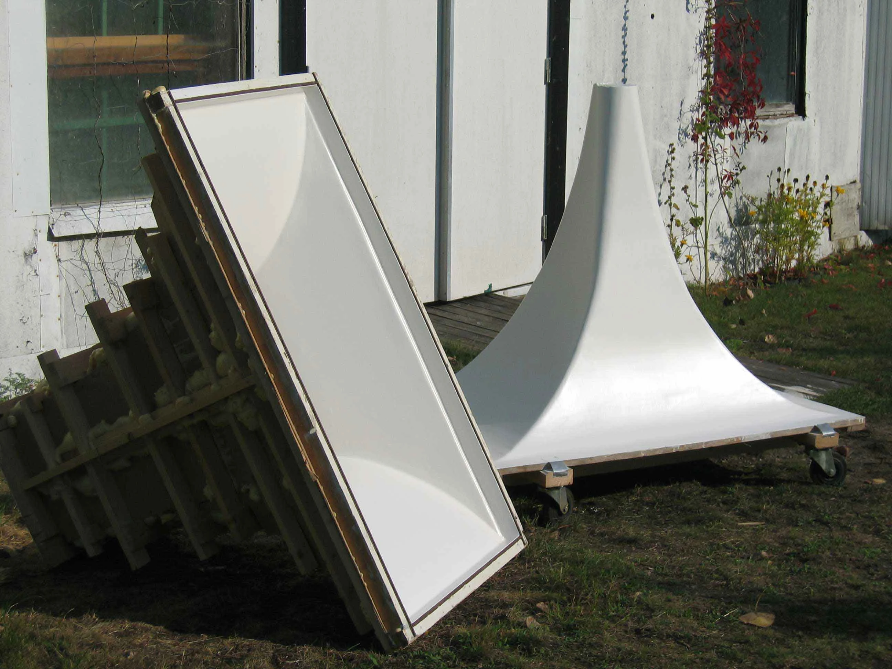
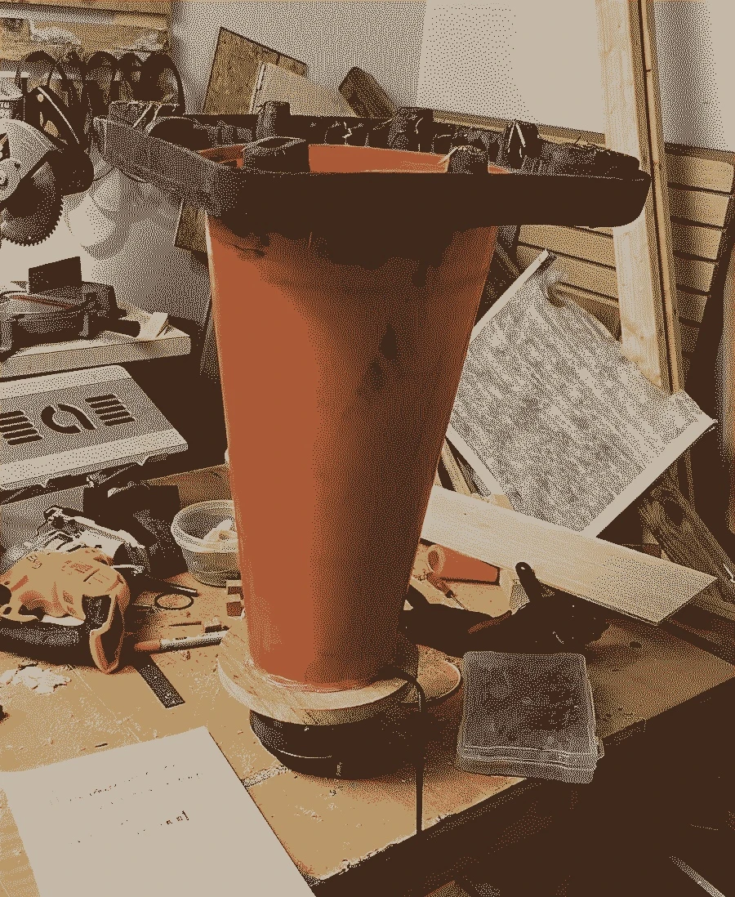

12-09-2025
The clouds have been SEVERED. Added 15 in woofers and replaced the tweeter with an 8ohm fostex tweeter, now all the drivers are 8ohm and the soundstage has much more bass ;). Very happy. Because of the matching impedence I can now use them with tube amplifiers, and the crossovers are back where they are supposed to be. These will pair nicely with my ripole subwoofers.


10-21-2025
I still have not done a freq sweep on the cloud speakers, and I still havnt heard them outside of the weird acoustics of my insane carpeted huge office space of a studio but one thing i learned for sure is that I need to do something about the bass resposne and the tweeters. I'm learning about dipole speaker design and how an efficient and small RiPole design for the subwoofer is a good use of space and allows the bass to be more directional, in a figure 8, where the air back of the driver is pushing air backwards out of phase. I don't think the enclosed and now ported bass drivers were a good idea. I think I also stuffed them way too much with fiberglass and lost most of the back volume due to that. In my next design I want to try a stereo pair of these RiPole subs with an open baffle full range driver on top. I have these coaxial drivers I found in an old organ that I would love to put to use as well, but the drivers are different left to right. I'll do sweeps of those and if they both end up looking similar I might just use those for the tops for now, although I don't know their impedance. Efficient open baffle and dipole designs also I think I would enjoy more because I am not designing for a club or big spaces, mostly just small rooms and my bedroom. I also want to use them with hifi tube amps which require efficient speaker systems to get the most loudness.
A RiPol (Ridtahler dipole) subwoofer is a specific type of compact, folded-baffle dipole design that uses two woofers in an opposing push/push configuration to produce a unique cardioid-shaped radiation pattern. This design lowers the woofer's resonant frequency, which allows for very deep bass with a relatively small cabinet and reduces room standing waves by canceling out low-frequency energy in certain directions. This results in clearer, more musical bass that is less localized and has less impact on nearby electronics.

The ripole sub will give me deep bass, tuning the port gets you about -7 to -10 hz from the resonant frequency of the driver. So with the peavy black widow drivers I should be able to get down from like 90 hz to 30 or 40.


09-22-2025
The cloud speakers are done! This was a wild learning experience. I was super excited when the crossover came in to set it up. I did a lot of testing at 4ohms with the crossover around 290 for the bass and 2400 for the mid to tweeter, and at 8 ohms with the crossover for the bass around 300 and the tops around 3400. I decided to stick with running the speakers at 4 ohms. One of the immediate things i noticed was that there wasn't enough bass at all. This could be because the bass drivers I was using were 4 ohm, and the mid ones were 8 ohms and covering a wider range, but also because the mid drivers were open back and the subs were enclosed, so you're getting twice as loud of a sound coming out of the mid range drivers. I added two power resistors, whatever I had lying around in the studio to the back of the mid range drivers to make them about 10db quieter which helped but they still feel loud and I don't think ill get much out of these cheap 10in bass drivers, so I'm leaving it where it is for now, and maybe ill add another resistor in series to the back if its too mid heavy. That said, there is a lot of clarity in those mids, not so much in the highs, I wish i had used compression drivers or added a piezo or super tweeter to get up to 20khz, but this is the gonzo build. It just needed to happen and now its done. They sound great! I have a lot of ear fatigue from lots of listening so I'm going to take a break from them, listen to them in new spaces and ask for peoples opinions on ho they sound so I don't feel crazy.


09-09-2025
The cloud speakers are almost complete! Today I ordered the crossover. When me and Matt did a sweep on the low, mid and high frequency drivers, we found that the mid range drivers roll off around 2400 hz. When doing the crossover manually with my modular synth I found it works well for the woofer driver around 300hz. I didn't really want to design the crossover from scratch so i went looking for one for similar specs for cheap, but could only find one with a crossover of 300hz and 3000hz. This means most likely there will be a drop between 2400/2800 hz and 3000hz, that im hoping isn't too drastic. I think it also rolls off on the bottom end around 100hz, which isnt ideal but its what i got for these. Tested them all today with separate amplifies and no crossover and it sounds pretty good! Wont know how flat it is until doing another full sweep after the crossover is wired up. The crossover I'm using is a cheaper copy of the Dayton audio XO3W-375/3K 3-Way Crossover. The one I'm using is the Audiopipe CRX-3003K. I have a feeling the super high frequencies are not really there yet too, maybe I will have to add some sort of super tweeter or piezo tweeter at the top, maybe with some simple tractrix horn. And the crossover matches the speakers in blue!


After doing some calculations and looking at the schematic of the crossover, It turns out my crossover points are actually shifting because of the ohm of my drivers. The tweeter driver is 6ohm, the midrange 8ohm and the woofer 4ohm. If I use the crossover in 8ohm mode, the low pass cutoff for the woofer becomes 425hz and the tweeter high pass becomes 3465hz, which is way too high for where my midrange driver rolls off. Instead I'll have to use it at 4ohms: the tweeter rolloff becomes 2400hz which is actually better for my midrange driver, and the woofer low pass becomes 212hz which is pretty low, but I believe the midrange driver can go that low or at least with only a little rolloff so I'm okay with that.
08-30-2025
Vitaphone Reference and Diy finds: the Western Electric 13A Horn
08-29-2025
The Speaker Stack
The speaker stack is a representation, a totem, a shrine, a ritual object in translating sound.
Each layer of the speaker stack directly correlates to its own architecture and program.
The bottom of the speaker stack, the bass, beneath a layer of grass, represents the ground and the dirt and the earth beneath our feet. We dance on this land, we kick our feet on this dirt together. The indigenous practice of drum circles and dance give thanks and homage to the ground beneath our feet, we celebrate by moving on the ground. The bass frequencies, with their long wavelengths, take seconds to fill a room, they have the longest history. They tell the stories of the elders, as the high frequencies tell the stories of the future, moving past our ears faster than we can perceive. We can hear down to 60hz, but no more than 20,000.
The speaker cabinet is a temple for the speaker driver, an architecture to acoustically amplifying its voice. Of the driver is the person in program, the cabinet is the architecture to make sure that voice is heard loud and clear. There’s a reason the wound copper, the heart of what makes a speaker driver work, is called the voice coil. If your skin, like a drum, is the paper cone attached to the voice coil that’s excited with voltage as purpose to make sound, what would you say?
The architecture of the horn lets your voice free, extending your voice through the people.
This mechanical object, the speaker driver, so technical in nature, explodes with sound when attached to the proper enclosure. The design of the box, makes a huge difference in the sound of the speaker, as the design of a space make a huge impact on the voices that pass through it. It’s this balance that makes speakers so beautiful. It’s not Ying and Yang, it’s Kaisen: continuous improvement or an uphill battle. There’s no perfect balance, and that’s what makes the experience of spaces so unique.
The wood against the speaker diaphragm extends the frequencies through the enclosure and amplifies the sound. Coupling the body to the architecture in the same way creates this deep connection to the space you’re interacting with.
The Yari Kanna Copy Paper, the hand carving wood tool in direct connection to the manufactured, machined, clean printer paper. It’s what makes these ritual objects. The use, over and over. The sound system playing songs, hymns, archival recordings, live performances, hours and hours and miles and miles of wavelengths that makes this architecture tell its own story.
There is this ephemeral nature to an object that emits sound: you hear a song and then it’s over, you may never hear it again, there’s no evidence it was ever played, you may even forget it the next day, but you can always go back to this object and experiment it new, like a sunrise the next morning.
There is real power in the speaker stack. The bass frequencies are so long and big that you can feel them physically, the high frequencies of not tamed can sound shrill like a baby crying or nails on a chalkboard. Years and years of club design and acoustics for the discotheque have led to the design of systems with such personalities and are a testament to our desire to feel sound on a physical comfortable level. This amplifier sounds “warm”. “The highs are easy on the ears”. A kick box you can “feel in your chest”. It’s the same as the car audio people that put 12 speakers in the back of their car, pull up to an empty lot where all of there friends also put 12 speakers in the backs of their cars, and see which systems make your hair fly into the air the most when you push the bass.
This is the reason why In loudspeaker design, these tuned systems, not for the room or the venue, but for the people and their ears, are so highly praised, weather it be the smooth deep sound of house music at the paradise garage in heart of NYC the 90s, or the cold harsh punchy kicks reverberating through warehouses at tresor and berghain in Berlin. The most popular and praised speakers designers being Altec Lansing and JBL, speakers originally designed for large scale theatre use, and home audio listening. These designs have been remixed and adapted for small and large scale speaker systems since the 70s and modified versions of their designs are still used in massive venues around the world.
When sound is architecture, these speakers appealed to many programs. There’s the designer; that wants them for the living room, the audiophile, that wants the best most “realistic” reproduction of sound for his record collection. “I want to feel like the Beetles are right in front of me on stage”. The average consumer that knows the name is good and wants to listen to anything. The musician that wants personalized sound for amplifying their sound. The monk that treats the sound system as a device for deep listening, where electronically amplified sound is needed, like the ritual of dance music.
It is clear, the speaker stack is the temple for the voice.
08-27-2025
Some things to think about for myself when designing these horns. In hornresp I need to specify that Im folding the horn, If im going to go about designing my own W-Bin for pro Dayton audio drivers. For driver specs, 500w and above is fine, I want high sensitivity for efficiency and loudness. Of course, the resonant frequency, If I want the driver to go low I need to pick a driver with a low resonant frequency, maybe around 40 or 30hz. The Vas (Equivalent Compliance Volume) Should Be bigger rather than smaller. The larger volume pushes more air. Qts (and its components, Qms, Qes) – Higher mechanical damping (Qms) and controlled total Qts (often between 0.3 and 0.5) are ideal for ported/W-bin designs, ensuring flatter response and better transient behavior. Bl – Force factor. Higher Bl means stronger motor, giving better control at high SPLs. Xmax – Maximum linear cone excursion. A driver with high Xmax supports higher output before distortion—critical for club-level SPL. Sd – Effective cone area. Larger Sd increases displacement volume (Vd), improving low-end output.
08-26-2025
Two new things. The Levan Horn and the Bertha horn are different. The one below with the extension are part of both designs, but the Bertha horn is more recent, and uses 2 15 in drivers or 2 18in drivers, the original Levan Horn had 1 18in driver. The mid bass/top used in the original Paradise garage design is also below. I think I will build my original found W bin design and modify it for modern Dayton Audio drivers, with a goal of flat (as possible) 30-80hz. Hornresp is annoying to use, but I think it will give me good simulations for this when I start. I want to use basic angles and normal wood lengths to make my life easier. I also plan to curve all of the folds in the horn and put insulation where needed, to smooth out freq response. Depending how high the superscooper goes and how low my tractrix compression driver horn goes I may not need a conical horn on top, I want to make the system 3 way.
This is my horn response for the W bin with the 15in drivers, according to my bad calculations from my bad rhino model of it, and the TS I'm looking for in the Imperial for the Dayton audio drivers, something simular to this:
08-24-2025
Shorty's mid bass cabinets that hes used at nowadays are modified Altec 817 for 18in drivers with larger ports. It's to complicated at my level to figure out that horn design custom for 18in woofers and ports so for now I'm going to stick to the 18in scooped J horn for the mid bass design and a conical horn for mid tops before the tweeters.
Found some interesting woodworking techniques and tools that will be useful for speaker and horn building. The first being layering wood to a rough curve and glueing and sanding them into the final shape shown in here. There is also a weird putty used on the back of these speakers mixed with beads and a binder. I think its a mixture of dampening compound, tar, paint, binder, structural putty and/or enameled or textured speaker cabinet paint. I don't think it would be wise to use resin or plaster. In the video, it seems like the putty can be thick, and applied on top of the back instead of sanding, if the walls allow for it.
08-22-2025
The other way to do it would be to do the bass cabinet down to 20hz with the Levan horn Richard Long and "Shorty" Use for Paradise Garage and This new venue Shorty is opening. The Levan horn is huge, uses 18in drivers. The horn I'm thinking of using uses two 15 in drivers. I'm also thinking about portability and where these speakers are going/moving them around. Probably will put casters on the back but don't want them to rattle.
And finally, a link to a couple of horn making techniques: first, the paper mache horn!!
Aaand the fiberglass horn
08-20-2025
I don't know much about hifi audio just yet but I want to start documenting all of the awesome projects I'm inspired by at the moment so i know where they are, where to reference them and pics of the crazy builds. I'll probably do that on this log, here are some I'm interested in recently. Most of these are from forums and internet archive hifi audio sites. There's some real craft and construction and sculptural nature to these.
The first is this concrete horn with a phaseplug for mid bass frequencies. The goal of the phase plug is to: Equalize Path Length-In a cone driver, sound from the outer edge has farther to travel to the throat than sound from the center. A phase plug helps compensate for this difference so the wavefront entering the horn is more coherent. Improve coupling efficiency-It narrows and shapes the exit path so the driver’s output matches the throat size of the horn, avoiding losses. Reduce high-frequency cancellation (“beaming” or lobing)-Even in the mid-bass, frequencies are short enough that interference can occur. A phase plug smooths response and extends usable bandwidth upward. Control directivity / wavefront shape-It helps form a more ideal wavefront (spherical or planar, depending on design) to match the horn’s flare. At lower frequencies (below ~150 Hz), the wavelength is so long that phase-plug effects are less critical—many designs skip it. For higher mid-bass or low midrange (~150–500 Hz), a phase plug can make a big difference in clarity, efficiency, and avoiding comb-filter effects.

The other DIY Tractrix horn (without a phase plug) I'm interested is talked about in my last post here, below.
Another crazy speaker I came across online recently are these backwards open baffle speakers Ricardo Villalobos has in his studio in If I Think Of Germany At Night by Reflector Audio , 218Q. 4 18in drivers tilted in 15-25deg to create a beam of bass from the back waves of the speaker driver, with a compression driver in the center. I want to DIY these, they're so insane. With my DIY projects, I think it will be fun and easy to get a wide frequency response out of my projects but things like room acoustics, phase and amping will be the hard part. How do these speakers not have crazy phase issues and the woofers are just blasting sound backwards? insane. I guess no one wanted them, the site has been down since 2018/2019.
08-18-2025
I'm thinking of building a 3/4 way system with 12-15 inch woofers in a W bin design similar to the W bin subwoofers of Altec in the 1940s-1970s for the theatre applications, with these dimensions:
For the ultra low frequencies (anywhere between 20-60hz) I want to tune some transmission line tapped horns with big sub drivers, and pair them togethet to get the same dimentions as the W bin. I havnt chose or done the math for them yet but I plan to sort of wing it, because of my specific dimentions, and just do the math for the length of the horn and size of the driver. Ideally all speakers used in the project are 8ohm, thinking Dayton audio. This is my reference for math for the transmission line horns: "In theory, to achieve maximum efficiency, horn dimension should be 1 wave-length long and 1 wave-length in mouth circumference at the lowest frequency. At 3 octaves higher the wavelengths are 1/10 of horn size and too small for the horn to direct them. These small wave-lengths bounce around inside the horn chaotically. It is essential to rescale a smaller horn for the next 3 octaves. Long horns are for low frequencies. Short horns are for high frequencies. Saxophones Trumpets French horns Tubas Etc obey this rule. There is no such thing in physics as long-throw or short-throw horns. These irresponsible marketing terms loosely refer to horn directivity. Low frequency horns using cone speakers can be 1/2 but not less than 1/4 wave-length at the lowest frequency, with reduced efficiency. 40Hz wave-length is 8m / 24ft It is not practical to make a bass horn this size so the horn is shortened (truncated) to 1/4 wavelength 2m / 6ft. Bass bin horns can be folded to control size. Made in sections and grouped to form a single bin."
For the midrange horns I want to load a mid range 12-15in driver in the style of Altec a7 VOT speakers or A1. Aiming for Tractrix style horns with 2 or 4 sided from the driver. This is my build reference for them: "You might ask why this guy used the Tractrix contour for his midbass, where everybody knows, that a horn of such geometry runs out of gas way before reaching fs. You’re right it’s true. However, my idea was to design a horn which should sound wise match the Tractrix midrange as good as possible. That’s why I decided to use Tractrix instead of a hyperbolic (m<1) or exponential (m=1) contour. Actually, in my room, these horns measure 140Hz to 700Hz within a range of ± 2dB. Below 140Hz these horns rolls off with approx 12dB/oct."

For the high frequencies I want to design exponential horns for a compression driver or two, 3D printed or lathe cut. OR try and diy the classic altec acoustic lens. OR i try to do some 3d printing/Rhino designs for a multicellular/sectoral horn like Altec's 1505, 1005 and 805 A and B, most likely B so it can be modular, easier to print that way.
08-18-2025
Recently I had the idea to make a reflex loudspeaker out of a compression driver I found, random parts and a traffic cone. The horn boosted the low end response of the compression driver while taking away some high frequencies. The horn also made the driver way more efficient (It gets a lot louder without needing to push the gain nearly as much. The horn is also a lamp! Here are some pics from my experiments. The large cone is the finished one with the compression driver attached. I want to use this for mid range in a 3 way speaker system. Maybe along with a horn loaded subwoofer and piezo tweeter, or smaller diaphragm compression driver tweeter attached to an exponential horn.


07-30-2025
Right now I'm building these hifi open baffle hybrid speakers from sub drivers that Hoolihan dropped off at the studio, mid range Page drivers that were used at PA speakers in the ceilings at my studio probably in the offices that occupied the space in the 90s and early 2000s, and tweeters Eli harvested from some studio monitors. This is my first HiFi Build and I'm doing it right, trying to build a nice crossover and everything, I was quad amping it for a while, using my modular to make crossover filters before the amp. The page drivers are open baffle and the BASS (bad ass serious sub) drivers are in a closed box, with no port. Matt Azevedo is helping me do the calculations, I need a windows computer to run Hornresp and RoomEQWizard. And i need to order some more parts for the crossover, but I've harvested some power caps and inductors from old speaker cabinets in the basement of the Firehouse. I'm learning a lot about crossover design and speaker impedance. The page drivers had transformers on the back of them that made me think that they would be a super high impedance but they ended up just being 8ohms. I have been looking at a lot of Japan HiFi Audio listening rooms with crazy compression drivers for the whole system, connected to these insane sculptural horns that spiral the house into the attic to make the length of the horn for bass response and I want to build something like that for my architecture thesis.